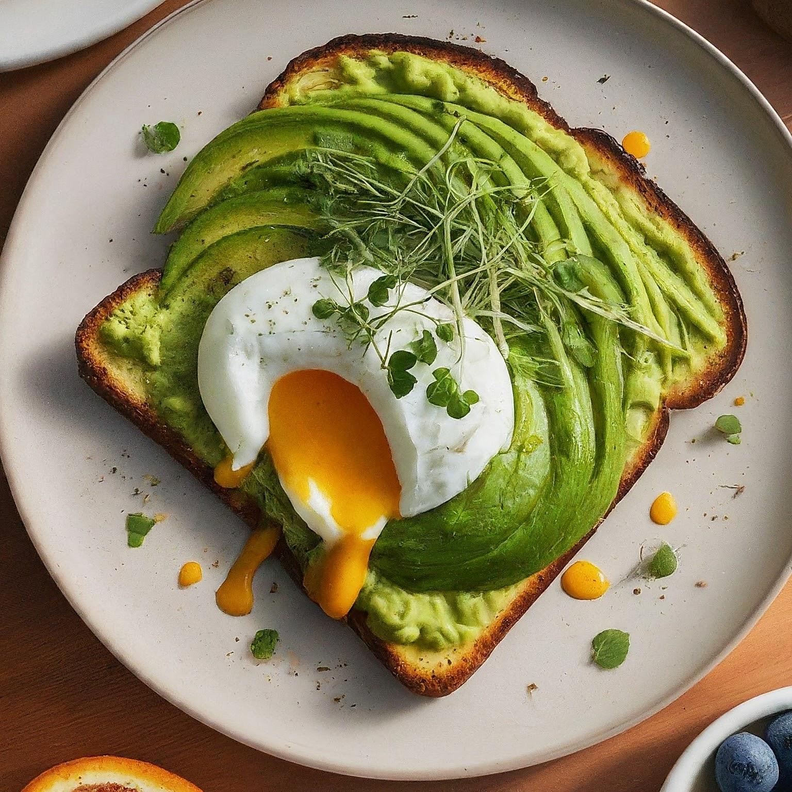

Avocado Toast
Ingredients:
1 slice of high-quality bread (sourdough, whole wheat, rye, etc.)
1/2 to 1 ripe avocado
Extra virgin olive oil
Salt
Freshly ground black pepper (optional)
Optional toppings (choose one or a combination):
Lemon juice
Red pepper flakes
Flaky sea salt
Everything bagel seasoning
Sliced cherry tomatoes
Chopped fresh herbs (cilantro, basil, chives)
A poached or fried egg
Instructions:
Toast the Bread: Toast your bread slice in a toaster, oven, or pan until golden brown and crisp.
Prepare the Avocado: Cut the avocado in half, remove the pit, and scoop out the flesh with a spoon.
You can either mash the avocado with a fork in a bowl for a smoother texture, or keep it chunky for a more rustic feel.
Spread the Avocado: Spread the mashed or chunky avocado on the toasted bread.
Season and Drizzle: Drizzle the avocado toast with a generous amount of extra virgin olive oil.
Season with salt and freshly ground black pepper (if using) to taste.
Add Toppings (Optional): Now's the time to get creative! Add any of your chosen toppings to customize your avocado toast.
A squeeze of lemon juice can brighten the flavor, red pepper flakes can add a kick of spice, or flaky sea salt can add a touch of luxury.
Serve and Enjoy: Serve your avocado toast immediately while the bread is still warm and crispy.
Tips:
Ripeness is Key: Use a ripe avocado for the best flavor and texture. A ripe avocado will yield to gentle pressure when squeezed.
Prevent Browning: If you're not assembling your toast right away, you can prevent the avocado from browning by brushing or drizzling it with a little lemon juice.
Leftovers: Although not ideal, leftover avocado toast can be stored in an airtight container in the refrigerator for up to 2 hours. However, the avocado will likely brown and the toast will become soggy.
It's best to enjoy avocado toast fresh.
Experiment with Toppings: The possibilities are endless when it comes to avocado toast toppings! Get creative and try different combinations of ingredients to find your favorites.
Enjoy your delicious and healthy avocado toast!